품질경영기사 (2012-09-15 기출문제)
1과목: 실험계획법
1. 동일한 제품을 만드는 4대의 기계에서 각각 300개의 제품을 샘플링하여 검사하였더니 다음과 같은 결과를 얻었다. 적합품이면 0, 부적합품이면 1을 갖도록 계수치 데이터로 만들어 분산분석하고 싶다. 데이터가 계량치가 아니고 계수치 데이터라도 데이터가 많은 경우에 분산분석이 가능한 이유는 어떤 이론(정리)에 근거하고 있는가?
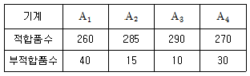
- Rao－Blackwell 이론
- 베이즈 정리(Bayes Theorem)
- 중심극한의 정리(Central Limit Theorem)
- 최소제곱법 이론(Theory of Least Squares Method)
(정답률: 66%)

2. 4개의 처리를 각각 n회씩 반복하여 평균치
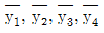
를 얻었다. 대비(Contrast)가 될 수 없는 것은?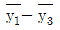
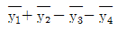
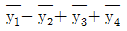
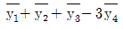
(정답률: 70%)
3. 반복수가 같은 1원 배치법에서 오차항의 자유도는 35, 총자유도는 41일 경우, 수준수 및 반복수는 각각 얼마인가?
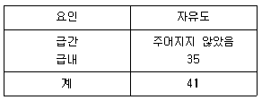
- 수준수：6, 반복수：7
- 수준수：6, 반복수：8
- 수준수：7, 반복수：6
- 수준수：8, 반복수：6
(정답률: 69%)
4. 총변동 중 회귀에 의하여 설명되는 변동이 차지하는 비율인 결정계수 (Coefficient of Determination)의 값은 약 얼마인가?
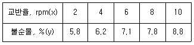
- 0.662
- 0.984
- 5.776
- 15.2
(정답률: 68%)
5. 실험의 결과 특성치가 다음과 같다. 이를 망목 특성치로 생각하면 SN비(Signal to Noise Ratio)는 약 얼마인가?
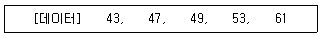
- 8.685db
- 17.37db
- 20.01db
- 40.02db
(정답률: 62%)
6. L8(27)직교배열표를 이용하여 주효과 A, B, C, D와 교호작용효과 A×B, A×C 중에서 유의 한 효과를 걸러내는 실험을 한다. 각 열 번호와 해당열의 효과 배치, 각 열의 4개씩의 0그룹과 1그룹 반응치들의 합계가 아래와 같다. 호작용효과 A×B에 의한 변동 A×B 는 얼마인가?
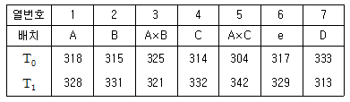
- 0.5
- 1
- 2
- 4
(정답률: 56%)
7. 인자수가 3개(A, B, C)이고 수준수가 3인 반복이 없는 3원배치 실험에 관한 다음과 같은 분산분석표에서 요인 A×B의 분산비 F0는 약 얼마인가? (단, 인자 A, B, C는 모두 모수인자이다.)
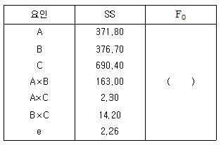
- 2.04
- 12.57
- 53.06
- 144.25
(정답률: 64%)
8. 인자 A, B, C를 택하여 3회 반복의 지분실험을 하였을 때 요인 C(AB)의 자유도(νC(AB))와 오차의 자유도(νe)는 각각 얼마인가? (단, 인자 A, B, C는 각각 4수준, 3수준, 2수준이며, 모두 변량인자이다.)
- νC(AB)=12, (νe)=24
- νC(AB)=12, (νe)=48
- νC(AB)=24, (νe)=12
- νC(AB)=24, (νe)=48
(정답률: 64%)
9. 반복 2회인 2원 배치 실험에서 인자 A가 4수준, 인자 B가 3수준이면 유효반복수는 얼마인가? (단, 교호작용이 유의하다.)
- 2
- 3
- 4
- 5
(정답률: 28%)
10. 모수인자 A(ℓ 수준)를 1차 단위로, 모수인자 B(m 수준)를 2차 단위로 하여 블록 반복 r회의 1차 단위가 1원 배치인 단일분할법에 의하여 실험한 결과, 분산분석에서 블록인자 R블록과 1차 오차 e1 이 모두 유의하였다. 이때 Ai수준에서의 모평균 100(1－α)%의 신뢰구간은? (단, ν*e는 Satterthwaite 자유도이다.)
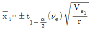
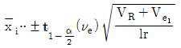
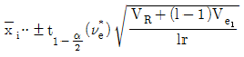
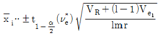
(정답률: 25%)
11. 실험횟수를 늘리지 않고 실험 전체를 몇 개의 블록으로 나누어 배치하여 동일 환경 내의 실험횟수를 작게 한 배치법은?
- 교락법
- 요인배치법
- 난괴법
- 라틴방격법
(정답률: 63%)
12. 인자의 모든 수준조합에서의 실험 중 불필요한 고차의 교호작용효과는 구하지 않고 적은 실험횟수로 인자의 조합 중 관심 있는 일부분만 실험하는 실험설계 방법은?
- 난괴법
- 분할법
- 일부실시법
- 요인배치법
(정답률: 85%)
13. 일반적으로 실험을 통하여 달성하고자 하는 목적과 가장 거리가 먼 것은?
- 어떤 요인을 이상원인과 우연원인으로 분류하고 이상원인이 공정에 실시간으로 발생하는지를 발견하기 위하여
- 어떤 요인이 반응에 유의한 영향을 주고 있는가를 파악하고, 그 영향이 양적으로 얼마나 큰지를 알기 위하여
- 작은 영향밖에 미치지 못하는 요인들은 전체적으로 어느 정도 영향을 주고 있으며, 측정 오차는 어느 정도인가를 알아내기 위하여
- 유의한 영향을 미치는 원인들이 어떠한 조건을 가질 때 가장 바람직한 반응을 얻을 수 있는가를 알아내기 위하여
(정답률: 45%)
14. 제품의 강도를 높이기 위하여 열처리 온도를 인자로 설정하여 300℃, 350℃, 400℃에서 실험을 실시하였다. 다음 설명 중 옳지 않은 것은?
- 수준수는 3이다.
- 강도는 특성치이다.
- 열처리 온도는 모수인자이다.
- 수준의 선택이 랜덤으로 이루어진다.
(정답률: 68%)
15. 3수준계 선점도에 관한 설명으로 옳지 않은 것은?
- 3수준계의 선점도는 주 인자의 배정을 점에 하는 것이 원칙이며, 선에는 교호작용이 나타나므로 주 인자는 배정하지 않는다.
- 가장 할당이 작은 것은 L9(34)형 선점도로 오직 1가지이며 교호작용을 고려하면 인자는 최대 2개밖에 할당할 수 없다.
- 선점도를 사용할 때 점에다 주인자를 할당하면 2인자 및 3인자 교호작용의 경우 선점도에 자동으로 할당되므로 큰 문제는 없다.
- 할당되지 않고 남는 점이나 선은 오차항으로 활용되므로 가급적 불요한 교호작용이나 관련 없는 인자를 억지로 할당하지 않도록 한다.
(정답률: 65%)
16. 2인자 교호작용에 관한 설명으로 가장 거리가 먼 내용은? (단, 인자 A, B는 모수인자이다.)
- 교호작용이 유의하지 않으면 μ(Ai)와 μ(Bj0의 추정은 의미가 없다.
- 교호작용이 유의한 경우, 인자 A, B가 유의하여도 각각의 모평균을 추정하는 것은 의미가 없다.
- 교호작용이 유의하지 않으면, 유의한 인자에 대해 각 수준의 모평균을 추정한다.
- 교호작용이 유의한 경우, μ(AiBj)를 추정하여 이것으로부터 최적조건을 선택한다.
(정답률: 40%)
17. 어떤 제품의 내마모성을 조사하였더니 다음과 같았다. 인자 A의 변동(SA)은 약 얼마인가?
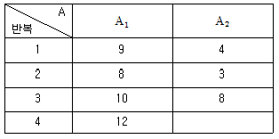
- 36.13
- 38.68
- 46.00
- 47.13
(정답률: 82%)
18. 어떤 화학물질을 촉매반응시켜 촉매 (A) 2종류, 반응온도(B) 2종류, 원료의 농도(C) 2종류로 하여 23요인실험으로 합성률에 미치는 영향을 검토하여 [표]와 같은 데이터를 얻었다. 이때 SC는 얼마인가?
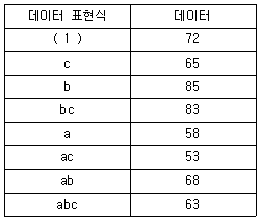
- 4.75
- 22.56
- 45.125
- 90.50
(정답률: 50%)
19. 난괴법에 관한 설명으로 가장 거리가 먼 것은?
- 1인자는 모수이고 1인자는 변량인 반복이 없는 2원배치의 실험이다.
- 일반적으로 실험배치의 랜덤에 제약이 있는 경우에 몇 단계로 나누어 설계하는 방법이다.
- 실험설계시 실험환경을 균일하게 하여 블록 간에 차이가 없을 때는 오차항에 풀링하면 1원 배치실험과 동일하다.
- 일반적으로 1원 배치로 단순반복 실험을 하는 것보다 반복을 블록으로 나누어 2원 배치하는 경우, 층별이 잘되면 정보량이 많아진다.
(정답률: 65%)
20. 라틴방격법에 관한 설명으로 옳은 것은?
- 3원 배치실험 횟수와 라틴방격법의 실험횟수는 같다.
- 4×4 라틴방격법에는 오직 1개의 표준 라틴방격이 존재한다.
- 라틴방격법에서 수준수를 k라 하면 총실험횟수는 k2가 된다.
- 라틴방격법에서 각 인자의 수준수는 반드시 동일할 필요는 없다.
(정답률: 63%)
2과목: 통계적품질관리
21. p 관리도와  관리도에 대한 설명이 가장 잘못된 것은?
관리도에 대한 설명이 가장 잘못된 것은?
- 일반적으로 p 관리도가
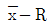
관리도보다 시료수가 많다. - 파괴검사의 경우 p 관리도보다
 관리도를 적용하는 것이 유리하다.
관리도를 적용하는 것이 유리하다. - 일반적으로 p 관리도가
 관리도보다 얻을 수 있는 정보량이 많다.
관리도보다 얻을 수 있는 정보량이 많다.  관리도를 적용하기 위한 예비적인 조사 분석을 할 때 p 관리도를 적용할 수 있다.
관리도를 적용하기 위한 예비적인 조사 분석을 할 때 p 관리도를 적용할 수 있다.
(정답률: 60%)
22. 계수치 샘플링검사 절차 － 제2부：고립 로트 검사용 한계품질(LQ)지표형 샘플링검사 방식(KS Q ISO 2859－2：2010)에서 한계품질(LQ)은 바람직한 품질의 최저 몇 배 이상의 현실적 선택을 하는 것이 바람직한가?
- 2배
- 3배
- 5배
- 10배
(정답률: 53%)
23. A＝－2.1＋0.2ncum, R＝1.7＋0.2ncum인 계수치 축차 샘플링 검사방식(KS Q ISO 8422：2009)을 실시한 결과 6번째와 15번째, 20번째, 25번째, 30번째, 35번째 그리고 40번째에서 부적합품이 발견되었고, 44번 시료까지 판정 결과 검사가 속행되었다. 45번째 시료에서 검사결과가 적합품이라면 로트를 어떻게 처리해야 하는가? (단, 누계 샘플 중지값은 45개이다.)
- 로트를 합격시킨다.
- 검사를 속행한다.
- 로트를 불합격시킨다.
- 생산자와 협의한다.
(정답률: 59%)
24. 두 사람의 작업량이 [표]와 같을 때 작업자에 따라 차이가 있는지의 적합도 검정 과정에 관한 내용으로 옳지 않은 것은?
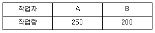
- 귀무가설(H0)：두 사람의 작업량은 같다.
- 기대도수는 각 작업자별로 225이다.
- 자유도는 1이다.
- 검정통계량은 5.625이다.
(정답률: 66%)
25. 생산시스템 자체의 특성상 항상 생산라인에 존재하며, 품질에 변화를 가져오는 어쩔 수 없는 원인의 표현방법으로 옳지 않은 것은?
- 우연 원인
- 불가피 원인
- 억제할 수 없는 원인
- 보아 넘기기 어려운 원인
(정답률: 63%)
26. 관리도의 OC 곡선에 관한 설명으로 옳지 않은 것은?
- 공정이 관리상태일 때 OC 곡선은 제1종의 오류 α를 나타낸다.
- 공정이 이상상태일 때 OC 곡선은 제2종의 오류 β를 나타낸다.
- OC 곡선은 관리도가 공정변화를 얼마나 잘 탐지하는가를 나타낸다.
 관리도의 경우 정규분포의 성질을 이용하여 OC 곡선을 계산할 수 있다.
관리도의 경우 정규분포의 성질을 이용하여 OC 곡선을 계산할 수 있다.
(정답률: 59%)
27. 두 조의 부적합수 차에 대한 근사적 U 검정을 할 때
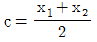
로 놓으면 검정통계량의 값은 얼마인가? (단, x1=10, x2=6이다.)- 1
- 2
- 3
- 4
(정답률: 47%)
28. 공정능력에 관한 설명으로 옳지 않은 것은? (단, USL은 규격상한, LSL은 규격하한이다.)
- 공정능력지수는 Cp＝(USL-LSL)/(3σ)이다.
- 공정능력지수는 협력업체의 제조 공정에 대한 품질수준을 Audit할 때 유용하게 활용할 수 있다.
- 공정능력이란 생산 공정이 얼마나 균일한 품질의 제품을 생산할 수 있는지를 반영하는 정적인 상태의 고유 능력을 의미한다.
- 공정능력지수는 자연공차와 규격의 폭과의 비율로서 공정이 규격에 맞는 제품을 생산할 능력을 가지고 있는지를 나타내는 지수이다.
(정답률: 58%)
29. 계수치 샘플링 검사의 OC 곡선에 관한 설명으로 옳지 않은 것은?
- 부적합품률의 변화에 따라 합격되는 정도를 나타낸 곡선이다.
- 로트의 크기와 시료의 크기, 합격판정개수를 알면 그에 맞는 독특한 OC 곡선이 정해진다.
- 부적합품률이 P일 때 초기하분포, 이항분포, 포아송분포 중에 하나를 사용하여 L(p)를 구한다.
- 시료의 크기와 합격판정개수가 일정할 때 로트의 크기가 변하면 OC 곡선에 크게 영향을 준다. (단, 로트의 크기는 시료의 크기에 비해 충분히 크다.)
(정답률: 73%)
30. 1,000본들이 볼트(Bolt) 80상자가 있다. 이 중 100본을 발취하기 위해 우선 80상자에서 5상자를 랜덤(Random)으로 발취하고 다음에 5상자에서 각각 20본씩 랜덤으로 발취하는 방식의 샘플링을 무엇이라 하는가?
- 단순샘플링
- 계통샘플링
- 층별샘플링
- 2단계 샘플링
(정답률: 69%)
31. 상관의 검정 결과 모상관계수 ρ≠0라는 결과가 나왔다. 이 결과가 의미하는 것으로 옳은 것은?
- H0를 채택한다.
- 재검정을 요한다.
- 상관관계가 있다는 것을 의미한다.
- 상관관계가 없다는 것을 의미한다.
(정답률: 68%)
32. 다음 중 검사가 행해지는 공정에 의한 분류에 속하지 않는 것은?
- 구입검사
- 중간검사
- 출하검사
- 순회검사
(정답률: 61%)
33. 공정의 변화에 대한 신뢰도의 탐지능력에 관한 설명으로 옳지 않은 것은?
- 관리한계의 폭이 넓어질수록 탐지력이 높아진다.
- 시료크기가 클수록 이상상태에 대한 탐지력이 높아진다.
- 품질특성치에 대한 공정변화량이 클수록 탐지력이 높아진다.
- 시료의 채취빈도를 높일수록 공정변화를 빨리 탐지할 기회가 높아진다.
(정답률: 45%)
34. A 업종에 종사하는 종업원의 임금실태를 조사하기 위하여 표본의 크기로 120명을 조사하였더니 평균 98.87만 원, 표준편차 8.56만 원이었다. 이들 종업원 전체 평균임금을 위험률 1% 로 추정하면 신뢰구간은 약 얼마 정도인가? (단, u0.995＝2.58, u0.99=2.33이다.)
- 96.66～101.08만원
- 96.85～100.89만원
- 97.19～100.55만원
- 97.45～100.28만원
(정답률: 74%)
35. 다음 진술에 ( ) 안에 들어갈 단어가 순서대로 나열된 것은?
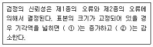
- ① α, ② β
- ① β, ② α
- ① α, ② 1-β
- ① 1-α, ② β
(정답률: 58%)
36. 부분군에 관한 설명으로 가장 거리가 먼 것은?
- 부분군의 채취빈도가 높을수록 공정변화를 민감하게 탐지할 수 있다.
- 일반적으로 부분군의 크기가 클수록 공정의 작은 변화를 더 민감하게 탐지할 수 있다.
- 관리도상에서 한 점으로 나타나는 통계량의 값을 구하기 위해 추출되는 표본을 부분군이라 한다.
- 합리적인 부분군 형성의 기본개념은 이상요인이 존재할 때 부분군내의 변동은 최대가 되고 부분군 간의 변동은 최소가 되도록 하는 것이다.
(정답률: 54%)
37. 2대의 기계 A, B에서 생산된 제품에서 각각 시료를 뽑아 평균과 표준편차를 구했더니
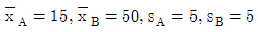
로 평균치의 차이가 크게 나타났다. 변동계수를 이용하여 기계 A, B로부터 생산된 제품의 산포도를 비교한 결과로 옳은 것은?- A가 B보다 산포도가 크다.
- A가 B보다 산포도가 작다.
- A와 B의 산포도가 같다.
- 변동계수로는 산포도를 비교할 수 없다.
(정답률: 60%)
38. 로트의 평균치가 클수록 좋은 경우, 가능한 한 합격시키고 싶은 로트의 평균값의 한계는 30%, 가능한 한 불합격시키고 싶은 로트의 평균값의 한계는 25%일 때 α=0.⑤, β＝0.10을 만족시키기 위한 시료의 최소 크기는 몇 개인가? (단, 표준정규분포의 상측 확률 α의 점은 1.645, 표준정규분포의 상측 확률 β의 점은 1.282, 로트의 표준편차는 4%이다.)
- 4
- 6
- 8
- 10
(정답률: 57%)
39. 확률분포에 관한 설명으로 옳은 것은?
- 포아송분포는 평균값(m)이 작을 때 대칭에 가까워진다.
- 이산확률분포함수와 연속확률분포함수는 어떤 경우라도 근사할 수 없다.
- 정규분포, t 분포는 서로 같아질 때가 있으며, ?2분포와 F 분포는 서로 같아질 때가 없다.
- 이항분포는 성공률이 p인 베르누이시행을 n번 반복 시행되었을 때, 확률변수 X를 “n번 시행에서의 성공횟수”라 하면 이때 X는 이항분포 B(n, p)를 따른다.
(정답률: 76%)
40. 자동화 기계에 의해 제품을 생산하는 공장에서 1개월에 평균 3번 정도 기계가 고장이 발생한다고 한다. 이 공장에서 자동화 기계가 1개월에 한번만 고장이 발생할 확률은 얼마인가?
- e-3
- 3e-3
- 3e-1
- 3×0.1
(정답률: 50%)
3과목: 생산시스템
41. 평균관측시간이 0.7분, 평정계수가 110%, 여유율이 12%일 때, 외경법에 의한 표준시간은 약 몇 분인가?
- 0.74
- 0.82
- 0.86
- 0.88
(정답률: 77%)
42. 계획생산의 특징으로 가장 적합한 것은?
- 다품종 소량생산
- 공정별 배치
- 판매 후 생산
- 연속생산
(정답률: 59%)
43. 작업관리에 관한 설명으로 옳지 않은 것은?
- 작업분석은 작업의 생산적요소 내지 비 생산적요소를 분석하는 것이다.
- 공정분석은 불합리한 동작을 제거하여 최선의 작업방법을 모색하는 것이다.
- 작업방법의 개선은 ECRS 원칙에 따라 전개하는 것이 유리하다.
- 작업환경이 개선되면 산업재해가 줄고 작업자의 사기가 올라가서 생산성과 품질이 향상되고 노사관계도 개선될 수 있다.
(정답률: 54%)
44. 간판의 기능과 사용수칙에 대한 설명으로 옳지 않은 것은?
- 간판의 사용수칙으로 후속공정에서 필요한 부품을 전공정에서 가져온다.
- 간판은 과잉생산, 표준화 등의 경영개선도구와는 상관이 없다.
- 간판은 작업지시기능을 가지고 있다.
- 간판의 사용수칙으로 부적합품을 후속공정에 보내지 않는다.
(정답률: 67%)
45. 생산관리의 기본 기능을 크게 3가지로 분류할 경우 해당되지 않는 것은?
- 계획기능
- 통제기능
- 실행기능
- 설계기능
(정답률: 55%)
46. 부하와 능력상에 변동이 있으므로 실제의 능력과 부하를 파악하여 양자가 균형을 이루도록하는 것은?
- 작업배정
- 절차관리
- 진도관리
- 여력관리
(정답률: 56%)
47. 간트도표에 대한 설명 중 틀린 것은?
- 간트도표는 계획된 작업과 실적은 같은 시간 축에 횡선으로 표시하여 계획과 통제를 할 수 있는 봉 도표이다.
- 작업의 계획과 실적을 명확히 파악할 수 있다.
- 작업장별 작업성과를 비교할 수 있다.
- 일정계획의 변경에 융통성이 강하다.
(정답률: 63%)
48. 다중활동분석표의 사용 목적으로 가장 올바른 것은?
- 기계 혹은 작업자의 가동시간을 단축한다.
- 조작업의 효율은 떨어뜨리고 개인작업의 효율을 높인다.
- 조작업의 작업현황을 파악한다.
- 한명의 작업자가 담당할 수 있는 인원을 산정한다.
(정답률: 47%)
49. 동작경제의 원칙 중 공구 및 설비디자인에 관한 원칙에 해당하는 것은?
- 작업면에 적정한 조명을 준다.
- 공구와 재료는 작업순서대로 나열한다.
- 2가지 이상의 공구는 가능한 기능을 결합하여 사용한다.
- 양손은 동시에 시작하고 동시에 끝내도록 한다.
(정답률: 74%)
50. 설비종합효율을 저해시키는 로스와 효율관리 지표와의 관계를 설명한 것으로 가장 올바른 것은?
- 고장로스와 작업준비 조정로스는 양품률을 떨어지게 한다.
- 일시정지로스와 속도저하로스는 성능 가동률을 떨어지게 한다.
- 공정불량로스와 초기 수율저하로스는 시간 가동률을 떨어지게 한다.
- 휴지로스, 관리로스는 수율을 떨어지게 한다.
(정답률: 72%)
51. 다음 각 작업의 우선순위 결정기준에 대한 설명으로 틀린 것은?
- 여유시간법은 최소 여유시간의 작업을 먼저 수행한다.
- 긴급률법은 긴급률이 가장 큰 작업을 먼저 수행한다.
- 최단처리시간법은 작업시간이 가장 짧은 작업을 먼저 수행한다.
- 납기우선법은 납기예정일이 가장 빠른 작업을 먼저 수행한다.
(정답률: 67%)
52. 총괄생산계획 (Aggregate Planning)에 대한 내용으로 가장 관계가 먼 것은?
- 계획대상기간은 향후 약 1년 정도이다.
- 기업의 전반적인 생산수준, 고용수준, 잔업수준, 외주수준, 재고수준 등을 결정한다.
- 기업에서 생산하는 개별 제품별로 계획을 수립한다.
- 도시법이나 선형계획모형, 선형결정규칙 등의 수리적 기법 혹은 경영계수법 등의 휴리스틱(Heuristic) 기법이 이용된다.
(정답률: 58%)
53. 먼지, 더러움의 발생원, 비산의 방지나 청소ㆍ급유의 관란 개소를 개선하여 청소ㆍ급유의 시간을 단축시키는 자주 보전의 단계는?
- 정리ㆍ정돈
- 발생원 곤란 개선 대책
- 자주점검
- 청소ㆍ급유 기준의 작성
(정답률: 27%)
54. 어떤 품목의 경제적 주문량은 250개이고 연간사용량은 4,000개이다. 개당가격은 1만 원, 연간 단위당 유지비용은 단가의 25%이다. 이 품목의 조달기간이 2주이고 1년이 52주라면 재주문점은 약 몇 개인가?
- 62개
- 63개
- 154개
- 163개
(정답률: 30%)
55. 공정별 배치의 장점을 기술한 내용으로 가장 관계가 먼 것은?
- 수요변화, 제품변경 등에 대한 유연성이 크다.
- 한 공정이 영향이 전 공정에 대해 적게 미친다.
- 다양한 작업으로 직무만족을 증가시킬 수 있다.
- 단위당 생산시간이 짧다.
(정답률: 60%)
56. Westinghouse System에 있어서 평준화(Leveling)법이 변동요인이 아닌 것은?
- 숙련도
- 노력도
- 공정순서
- 작업조건
(정답률: 59%)
57. 최종품목 한 단위 생산에 소요되는 구성품목의 종류와 수량은 MRP 투입 자료 중 어디에서 파악할 수 있는가?
- IRF(재고상황파일)
- MPS(주생산일정계획)
- CRP(능력소요계획)
- BOM(자재명세서)
(정답률: 78%)
58. 네트워크로 표시된 프로젝트에서 활동 (3,5)의 가장 빠른 착수시간(Earliest Start Time)과 가장 늦은 착수시간(Latest Start Time)은?
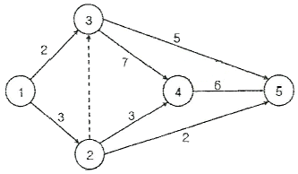
- (2, 2)
- (3, 3)
- (2, 11)
- (3, 11)
(정답률: 26%)
59. 다음 자료는 회사의 판매실적이다. 가중 이동평균법에 의하여 6월의 예측값을 구하면 약 얼마인가?
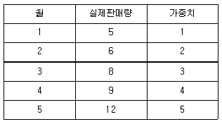
- 8.2
- 9.1
- 10.5
- 12.0
(정답률: 49%)
60. LOB의 양부를 측정하는 척도인 불평형률이란?
- 각 작업의 표준공수의 합계에 대한 손실공수의 합계의 대비
- 각 작업의 표준공수의 합계에 대한 예측공수의 합계의 대비
- 각 작업의 표준공수의 합계에 대한 여유공수의 합계의 대비
- 각 작업의 표준공수의 합계에 대한 실제공수의 합계의 대비
(정답률: 55%)
4과목: 신뢰성관리
61. 1950년대 신뢰성 공학의 발전에 획기적인 기여를 한 “AGREE”란 무엇을 의미하는가?
- 전파연구소
- 전자관 개발부
- 미사일 신뢰성 조사위원회
- 전자기기 신뢰성 자문위원회
(정답률: 73%)
62. 수리 가능한 시스템의 평균 고장률은 0.0125/시간, MTTR은 20시간일 때, 이 시스템의 가용도(Availability)는 얼마인가?
- 0.65
- 0.7
- 0.8
- 0.95
(정답률: 78%)
63. 전구 100개에 대한 수명시험을 하여 다음과 같은 데이터를 얻었다. t=30과 t=60 사이에서의 고장확률밀도함수 f(t)를 추정하면 약 얼마인가?
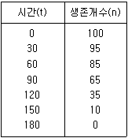
- 0.1/시간
- 3.5×103/시간
- 0.1⑤/시간
- 3.3×103/시간
(정답률: 31%)
64. 시스템의 총동작시간은 2.3×105시간으로 무고장이었다. 신뢰수준 90%로 MTBF의 하한값을 구하면 약 얼마인가? (단, ?20.9(2)=4.61, ?20.9(4)＝7.78이다.)
- 29,562시간
- 49,891시간
- 59,125시간
- 99,783시간
(정답률: 41%)
65. 지수분포의 확률지에 관한 설명으로 옳지 않은 것은?
- 관측 중단 데이터도 사용할 수 있다.
- 세로축은 누적고장률, 가로축은 고장시간을 타점하도록 되어 있다.
- 타점 결과 원점을 지나는 직선의 형태가 되면 지수분포라 볼 수 있다.
- 누적고장률의 추정은 t시간까지의 고장횟수의 역수를 위하여 이루어진다.
(정답률: 41%)
66. 어떤 제품의 수명이 평균 450시간, 표준편차 50시간의 정규분포에 따른다고 한다. 이 제품 200개를 새로 사용하기 시작하였다면 지금부터 500∼600시간 사이에서는 평균 약 몇 개가 고장 나는가? (단,
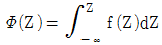
이?(1)=0.8413, ?(3)=0.9987이다.)- 30개
- 32개
- 91개
- 100개
(정답률: 61%)
67. 신뢰성 시험 중 파괴시험에 관한 사항이다. 이 중 가속시험으로 볼 수 없는 것은?
- 방치시험
- 한계시험
- 강제노화시험
- 단계스트레스시험
(정답률: 75%)
68. 대기 구성요소가 절환시까지 동작의 정지 또는 휴지상태로 있는 것을 의미하는 용어는?
- 열대기
- 온대기
- 냉대기
- 병렬대기
(정답률: 46%)
69. 3개의 중요한 장치가 등가적으로 직렬 배치되어 있다. 전체 신뢰도가 0.9412라고 할 때 각 장치의 신뢰도는 약 얼마가 되어야 하는가?
- 0.94
- 0.96
- 0.98
- 0.99
(정답률: 43%)
70. 다음 중 고장률 함수 λ(t)의 표현으로 옳은 것은? (단, F(t)는 고장분포함수, f(t)는 고장밀도함수이다.)
- λ(t)=1-F(t)
- λ(t)=f(t)(1-F(t)
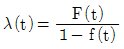
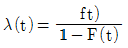
(정답률: 66%)
71. 샘플 9개에 대한 수명시험결과 각각의 시료들은 12, 25, 89, 3, 41, 22, 76, 69, 32시간째에 고장이 났다. 이를 평균순위법을 이용하여 추정할 때, 12시간 시점에서의 고장률 함수의 값은 약 얼마인가?
- 0.0085/시간
- 0.0100/시간
- 0.0125/시간
- 0.0143/시간
(정답률: 50%)
72. 지수분포의 수명을 갖는 부품 n개를 시험하여 고장의 수가 r개가 되었을 때 관측을 중단하였다. t1,…, tr을 고장시간이라고 할 때 MTTF의 추정치를 바르게 표현한 것은?
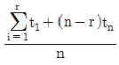
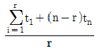
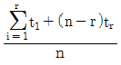
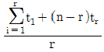
(정답률: 57%)
73. KS A 3004：2002 용어－신인성 및 서비스 품질의 정의에서 사전 시험이나 모니터링에 의해 예견될 수 없는 고장은?
- 오용고장
- 연관고장
- 열화고장
- 돌발고장
(정답률: 80%)
74. 신뢰성 설계에 대한 설명으로 가장 거리가 먼 것은?
- 설계품질을 목표품질이라고도 부른다.
- 시스템의 품질은 설계에 의해 많이 좌우된다.
- 설계품질에는 설계 및 기능, 신뢰성 및 보전성, 안정성이 포함된다.
- 설계단계에서 설계품질이 떨어지더라도 제조단계에서 약간만 노력하면 좋은 품질시스템을 만들 수 있다.
(정답률: 74%)
75. 고장해석기법에 관한 사항으로 가장 부적절한 것은?
- 신뢰성과 안전성은 서로 밀접한 관계를 가지고 있다.
- 고장이나 안전성의 원인분석은 표준적 상황에 따라 결정한다.
- 고장이나 안전성의 예측 방법으로 FMEA, FTA 등이 많이 사용된다.
- 고장해석에 따라 제품의 고장을 감소시킴과 동시에 고장으로 인한 사용자의 피해를 감소시키는 것이 안전성 제고이다.
(정답률: 50%)
76. 6개의 서브 시스템이 병렬로 구성되어 있는 어떤 시스템에서 t=100시간에서 각 서브 시스템의 신뢰도는 0.9라고 한다. t=100시간에서 시스템의 신뢰도는?
- (0.9)6
- 1-(0.9)6
- (1-0.9)6
- 1-(1-0.9)6
(정답률: 64%)
77. 구성품의 일부가 고장나더라도 그 구성 부분에 고장이 발생하지 않도록 병렬경로를 부가하여 설계하는 것을 의미하는 용어로 가장 적절한 것은?
- 보전성 설계
- 리던던시 설계
- 내환경성 설계
- Fool Proof 설계
(정답률: 67%)
78. 부하의 평균(μx)이 1, 표준편차(σx)가 0.4, 재료강도의 표준편차(σy)가 0.4이고, μx 와 μy로 부터의 거리인 nx와 ny가 각각 2인 경우 안전계수를 1.52로 하고 싶다면, 재료의 평균강도(μy)는 약 얼마가 되어야 하는가? (단, 재료의 강도와 여기에 걸리는 부하는 정규분포에 따른다.)
- 1.25
- 2.24
- 3.⑤
- 3.54
(정답률: 47%)
79. 그림과 같은 시스템에서 A, B, C의 고장확률이 각각 0.02, 0.1, 0.⑤로 하여 정상사상의 고장 확률을 구하면 얼마인가?
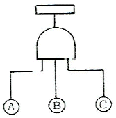
- 0.0001
- 0.1621
- 0.8379
- 0.9999
(정답률: 60%)
80. 어떤 시스템에서 수리시간을 포함하여 24시간 동안 5회의 고장이 발생하였으며, 각 고장발생시 기계의 수리시간은 1.0, 1.5, 2.0, 0.5, 1.0시간이 소요되었다면 MTTR은 얼마인가?
- 1.2시간
- 2.0시간
- 3.2시간
- 4.8시간
(정답률: 60%)
5과목: 품질경영
81. PL(Product Liability)과 가장 관계가 깊은 것은?
- 유용성
- 안전성
- 신뢰성
- 경제성
(정답률: 59%)
82. 고객만족을 위한 품질계획 활동으로 볼 수 없는 것은?
- 과거의 수행성과를 분석하여 품질목표를 설정한다.
- 고객에 대한 파레토 분석을 이용하여 핵심고객을 확인한다.
- 시장조사, 설문조사, 전화 인터뷰 등을 통하여 고객의 요구를 확인한다.
- 실패를 분석하고 대책을 세울 전문분석팀을 구축한다.
(정답률: 32%)
83. 품질관련 비용항목 중 예방비용으로 볼 수 없는 것은?
- 품질계획의 수립비용
- 품질개선을 위한 프로젝트 비용
- 소비자불만 처리비용
- 품질관리 교육비용
(정답률: 77%)
84. 동일한 측정자가 동일한 측정기를 이용하여 동일한 제품을 여러 번 측정하였을 때파생되는 측정변동을 의미하는 것은?
- 정확성(Accuracy)
- 안정성(Stability)
- 반복성(Repeatability)
- 재현성(Reproducibility)
(정답률: 44%)
85. 품질시스템이 제대로 구축되려면 회사에서, 품질개념을 제일 우선시해야 한다. 품질개념을 중시하는 내용으로 가장 관계가 먼 것은?
- 회사 내의 모든 품질문제는 최고의 품질 전문가를 초빙하여 자문을 받아 처리한다.
- 품질담당 중역이 회사에서 핵심역할을 한다.
- 품질은 모든 부서, 모든 사람들의 책임이라는 인식이 퍼져 있어야 한다.
- 품질에 대한 충분한 교육과 훈련, 품질성과에 대한 동기부여를 위한 제도 등이 정립되어야 한다.
(정답률: 60%)
86. 신제품개발, 신기술개발 또는 제품책임문제의 예방 등과 같이 최초의 시점에서는 최종결과 까지의 행방을 충분히 짐작할 수 없는 문제에 대하여, 그 진보과정에서 얻어지는 정보에 따라 차례로 시행되는 계획의 정도를 높여 적절한 판단을 내림으로써 사태를 바람직한 방향으로 이끌어 가거나 중대 사태를 회피하는 방책을 얻는 방법은?
- 계통도법
- 연관도법
- 친화도법
- PDPC법
(정답률: 75%)
87. 6시그마의 본질로서 가장 거리가 먼 것은?
- 기업경영의 새로운 패러다임
- 프로세스 평가ㆍ개선을 위한 과학적 통계적 방법
- 고객만족 품질문화를 조성하기 위한 기업경영 철학이자 기업전략
- 검사를 강화하여 제품 품질수준을 6시그마에 맞춤
(정답률: 54%)
88. 종합적 품질경영(TQM)을 추진하는 기업이 일반적으로 지켜야 할 원칙에 해당되지 않는 것은?
- 소수의 정예 엘리트 기술자 중심의 조직 운영
- TQM이 조직과 조직구성원에 미치는 영향에 대한 분석
- 기능별 팀을 조직하여 팀에 의한 문제해결 유도
- 실행단계에 맞는 적절한 교육 및 훈련 프로그램 개발
(정답률: 56%)
89. 국가 규격의 연결이 잘못된 것은?
- NF－프랑스
- GB－중국
- ANSI－미국
- UNE－이탈리아
(정답률: 47%)
90. 볼트와 너트 두 제품을 맞추었을 때, 즉 조립품에는 틈새 평균과 틈새 표준편차에 의한 정규분포를 따르게 된다. 이들 조립품 틈새의 평균치와 표준편차 공식으로 가장 올바른 것은?
- 평균＝너트의 바깥지름－볼트의 바깥지름
표준편차＝(너트의 표준편차2－볼트의 표준편차2) - 평균＝너트의 안쪽지름－볼트의 바깥지름
표준편차＝(너트의 표준편차2－볼트의 표준편차2) - 평균＝너트의 바깥지름－볼트의 바깥지름
표준편차＝(너트의 표준편차2＋볼트의 표준편차2) - 평균＝너트의 안쪽지름－볼트의 바깥지름
표준편차＝(너트의 표준편차2＋볼트의 표준편차2)
(정답률: 57%)
91. 도수표를 작성한 결과 중위수 (x0)는 151.55이고 급의 폭(h)는 4, Σfiui＝23, Σfiu2i=163, Σfi=94였다면 평균치( )는 약 얼마인가?
)는 약 얼마인가?
- 150.186
- 152.529
- 154.795
- 176.060
(정답률: 40%)
92. 품질전략을 수립할 때 계획단계(전략의 형성단계)에서 SWOT 분석을 많이 활용하고 있다. 여기서 O는 무엇을 뜻하는가?
- 기회
- 위협
- 강점
- 약점
(정답률: 73%)
93. 한국산업규격에서 사용되는 용어 중 본체 및 부속서(규정)의 규정 내용과 관련되는 사항을 보충하는 것을 무엇이라 하는가?
- 참고
- 추록
- 해설
- 비고
(정답률: 37%)
94. 제품의 일반목적과 구조는 유사하나, 어떤 특정한 용도에 따라 식별할 필요가 있을 경우에 쓰는 표준화 용어는 어느 것인가?
- 종류(Class)
- 등급(Grade)
- 형식(Type)
- 시방(Specification)
(정답률: 63%)
95. Y 제품의 규격이 15.0 이상이라고 한다. 평균치가 18.0, 표준편차가 2.1이다. 공정능력지수(CPL)은 약 얼마인가?
- 0.85
- 0.54
- 0.48
- 1.25
(정답률: 72%)
96. 문서화의 중요한 관점에서 볼 때 가장 거리가 먼 내용은?
- 문서의 사용자 입장에서 작성되고, 이해할 수 있어야 한다.
- 공식적인 문서(시스템 문서)이어야 한다.
- 문서의 최신본 관리가 이루어져야 한다.
- 문서화의 내용은 영구성이 있어야 한다.
(정답률: 57%)
97. 다음 중 일반적으로 검사규격(지침서)에 포함시켜야 할 내용에 해당되지 않는 것은?
- 검사설비 검ㆍ교정
- 합ㆍ부 판정기준
- 시료의 채취방법
- 조사 측정방법
(정답률: 50%)
98. 산업표준화법에서 규정한 시판품 조사에 대한 설명으로 옳지 않은 것은?
- 소비자단체의 요구가 있는 경우 시판품 조사를 할 수 있다.
- 인증제품의 품질저하로 인하여 다수의 소비자에게 피해가 발생한 경우 시판품 조사를 할 수 있다.
- 시판품 조사 결과 인증제품이 인증심사기준에 맞지 아니하다고 인정하는 때에는 그 사실을 해당 업체에 즉시 통보하여야 한다.
- 현장조사를 하는 경우에는 조사 7일 전까지 조사일시, 조사이유 및 조사내용 등에 대한 조사계획을 조사를 받을 자에게 통지하여야 한다.
(정답률: 43%)
99. 제품기획 단계의 품질평가에 대한 설명으로 적합하지 않은 것은?
- 품질평가 대상은 구체적인 물품이 아닌 기획품질이다.
- 품질평가 시 시장에 대한 적합성이 중시된다.
- 사회에 대한 적합성이 중시된다.
- 설계도면이나 시방서에 규정된 품질특성에 대한 테스트를 통해 품질을 평가한다.
(정답률: 32%)
100. 품질분임조를 성공적으로 운영하기 위해서 지켜야 할 내용 중 가장 관계가 먼 것은?
- 품질분임조 활동을 시작하기 전에 종업원 교육에 시간을 투자해야 한다.
- 종업원들을 각 부서별로 자발적으로 가입하도록 유도하여야 한다.
- 품질분임조 활동은 일상 활동과 구별해서는 안 된다.
- 품질분임조 활동의 주제 선정은 분임조장이 연구하여 결정한다.
(정답률: 68%)